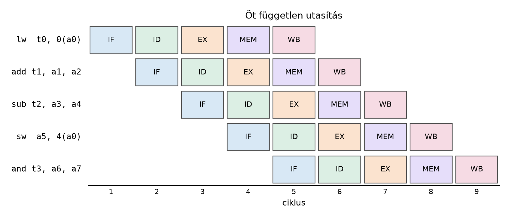

Az előző két fejezetben két processzort építettünk ugyanarra az utasításkészletre. Az egyciklusú gép (Az egyciklusú gép teljesítménye és korlátai) minden utasítást egyetlen, hosszú ciklusban végez el, ezért a ciklusidőt a leglassabb utasítás, a betöltés szabja meg. A többciklusú gép (Többciklusú adatút állapotgéppel) rövid ciklusokra bontja a munkát, de egy utasítás 3–5 ciklust kap, és a következő csak akkor indulhat, amikor az előző elkészült.
Vegyünk egy konkrét számot. Az egyciklusú gépnél a könyv
példakésleltetéseivel (utasításmemória 200 ps, regiszterolvasás 100 ps,
ALU 120 ps, adatmemória 200 ps stb.; oktatási értékek, nem egy adott
lapka adatai) a ciklusidő 750 ps lett. A futó sum kernel öt
utasításból álló ciklusmagja tehát
ps alatt fut le.
Ugyanez az öt utasítás egy futószalagon (pipeline) 2610 ps alatt elkészülhet, ha nem akadályozzák egymást. Hosszabb sorozaton a gyorsulás közelít a -szereshez. Meglepő módon eközben egyetlen utasítás sem lett gyorsabb: mindegyik 1450 ps-ig van úton, majdnem kétszer annyi ideig, mint az egyciklusú gépben. Ebben az alfejezetben megérted, hogyan lehet ez egyszerre igaz, és megtanulod azt a rajzot, amellyel a következő fejezetek minden futószalag-jelenséget leírnak. Egyelőre független utasításokkal dolgozunk; a hazárdok a következő két alfejezet témái.
Gondolj egy mosodára. Négy adag ruhát kell kimosni, megszárítani és összehajtogatni; mindhárom lépés 40 percig tart. Ha egy adagot teljesen befejezel, mielőtt a következőt elkezded, percre van szükséged. Közben a három gép közül mindig kettő áll.
Okosabb, ha a második adagot már akkor beteszed a mosógépbe, amikor az első átkerül a szárítóba. A harmadik óraütemtől mind a három „állomás” egyszerre dolgozik, és 40 percenként elkészül egy adag. Az egész perc. Figyeld meg a három tanulságot, mert a processzorban is mind érvényes:
A processzorban az utasítás az „adag”, az adatút egymás utáni részei az „állomások”. Az ötszakaszos RISC-V futószalag a következő szakaszokra osztja az adatutat (Az adatút elemei és összeállítása):
| Szakasz | Angol név | Mi történik | Főbb elem |
|---|---|---|---|
| IF | instruction fetch | az utasítás lehívása a PC címéről, PC + 4 | utasításmemória |
| ID | instruction decode | dekódolás, két regiszter olvasása, közvetlen érték | regiszterfájl, vezérlőegység |
| EX | execute | aritmetika, címszámítás, összehasonlítás | ALU |
| MEM | memory access | betöltés vagy tárolás | adatmemória |
| WB | write back | az eredmény beírása a rd regiszterbe |
regiszterfájl írókapuja |
A táblázat azt mondja meg, melyik hardver foglalt egy utasítás miatt
egy adott ciklusban. Mivel a szakaszok különböző elemeket használnak, öt
utasítás egyszerre lehet bennük, mindegyik másikban. Nem minden
utasításnak van dolga mindenhol (az add a MEM-ben tétlen, a
sw a WB-ben), de mindegyik végigmegy mind az ötön, hogy ne
előzhessék meg egymást.
Az alábbi ábra öt független utasítást követ négy időpillanatban. A
felső sáv a hardvert mutatja (melyik szakaszban melyik utasítás van, a
szakaszok között a keskeny téglalapok a szakaszregiszterek), az alsó
rács a pipeline-diagramot. Figyeld meg, hogy az 5.
ciklusban mind az öt szakasz foglalt, és hogy a hardverben fordított a
sorrend: a legrégebbi lw van jobb szélen, a WB-ben.
Definíció. A pipeline-diagram olyan rács, amelyben minden sor egy utasítás (programsorrendben), minden oszlop egy órajelciklus (1-től számozva), a cella pedig azt a szakaszt nevezi meg, amelyben az utasítás abban a ciklusban tartózkodik.
Hazárd nélkül minden utasítás egy ciklussal az előző után indul, és öt egymást követő cellát foglal el, ezért a diagram átlós sávot rajzol. Ha utasításunk és szakaszunk van, az első utasítás ciklus alatt ér végig (feltöltés), utána minden ciklusban elkészül még egy:
Öt utasításra és öt szakaszra ez
ciklus. A diagramban a stall (megakadás) jele s, a törölt
utasítás buborékjáé „–”; ezekre a következő alfejezetekben lesz
szükség.
Egy ciklus alatt minden szakasz más utasításon dolgozik, ezért a szakaszok eredményeit el kell tárolni, mielőtt a következő ciklusban a következő utasítás felülírná a bemeneteket. Erre valók a szakaszregiszterek (pipeline registers): élvezérelt regiszterek a szakaszok között, nevük a két szomszédos szakasz: IF/ID, ID/EX, EX/MEM és MEM/WB.
| Regiszter | Adat (RV32I) | Vezérlőjelek, amelyek továbbutaznak |
|---|---|---|
| IF/ID | PC (32 bit), utasításszó (32 bit) | – |
| ID/EX | PC, két regiszterérték, közvetlen érték (4 · 32 bit),
rs1, rs2, rd (3 · 5 bit) |
RegWrite, ResultSrc,
MemWrite, Branch, ALUControl,
ALUSrc |
| EX/MEM | ALU-eredmény, tárolandó érték (2 · 32 bit), rd |
RegWrite, ResultSrc,
MemWrite |
| MEM/WB | ALU-eredmény, beolvasott adat (2 · 32 bit), rd |
RegWrite, ResultSrc |
A táblázat egy elvet mutat: az utasítás mindent magával visz,
amire később szüksége lesz, és amire már nem, azt elhagyja. A
vezérlőjeleket (Vezérlőegység és vezérlőjelek)
az ID szakasz állítja elő egyszer, és azok az utasítással együtt
vándorolnak. Az ImmSrc például nem utazik tovább, mert a
közvetlen érték már az ID-ben elkészül. A cél regiszter száma,
rd, ellenben végig kell: a WB-ben az éppen ott lévő (régi)
utasítás rd mezőjébe írunk, nem abba, ami közben az ID-ben
dekódolódik. Az rs1 és rs2 számokat a
következő alfejezet továbbító egysége használja. A jal
utasításhoz a PC + 4 értéket is tovább kell vinni.
Minden szakasz ugyanazt az órajelet kapja, ezért a ciklusnak a leghosszabb szakaszhoz kell igazodnia, és az Órajel, kritikus út és időzítési korlátok ciklusidő-egyenlőtlensége szerint ehhez hozzáadódik a regiszter saját ideje:
Itt az . szakasz kombinációs (logikai) késleltetése, pedig az a többletidő, amelyet minden szakaszhatáron fizetünk: a regiszter kimenetének megjelenése () és a következő regiszter előkészítési ideje (). Az egyciklusú gép teljesítménye és korlátai elemkésleltetéseit ( ps, ps) szakaszokba rendezve:
| Szakasz | Elemek | Logika (ps) |
|---|---|---|
| IF | utasításmemória | 200 |
| ID | regiszterolvasás | 100 |
| EX | ALU | 120 |
| MEM | adatmemória | 200 |
| WB | multiplexer (30 ps) és a regiszterfájl 10 ps-mal hosszabb előkészítése | 40 |
A logika összege 660 ps; egyetlen szakaszban, a 90 ps-os regiszteridővel éppen az egyciklusú gép ps ciklusát kapjuk. Ötszakaszosan ps. Az ID 100 ps-ot, a WB mindössze 40 ps-ot dolgozik, a ciklus maradékában vár: ez a kiegyensúlyozatlanság ára.
Egy utasítás ciklusig van úton, ezért a késleltetése ps. Az átbocsátás viszont hazárd nélkül ciklusonként egy utasítás, utasítás nanoszekundumonként. Az egyciklusú géphez viszonyított gyorsulás utasításra:
A határérték szerint hosszú programon a gyorsulást csak a két ciklusidő aránya szabja meg. Ha a szakaszok tökéletesen egyformák lennének és a regiszter ingyen volna, akkor , és : ez az ideális gyorsítás. A mi példánkban , messze nem 5, mert a szakaszok egyenetlenek, és a regiszterek is időt visznek el.
Továbbvitt eredmény. Az ötszakaszos modell (IF, ID,
EX, MEM, WB, köztük az IF/ID, ID/EX, EX/MEM, MEM/WB szakaszregiszterek)
és a pipeline-diagram jelölése (sor = utasítás, oszlop = ciklus 1-től,
s = megakadás, „–” = buborék) a közös nyelv Adathazárdok: forwarding és stall, Vezérlési hazárdok és kivételek a futószalagban,
Pipeline-szimulátor és mélyebb futószalagok, ILP, függőségek és statikus ütemezés és VLIW és EPIC: a fordítóra bízott párhuzamosság
tárgyalásában.
Ha a futószalag gyorsít, miért állnánk meg ötnél? Nézzük meg, mi történik, ha az öt elemet több vagy kevesebb szakaszba osztjuk. A szomszédos elemeket összevonhatjuk (kevesebb szakasz), és gondolatban egy elemet kettévághatunk (több szakasz). Az alábbi ábra felső része négy beosztást rajzol fel, az alsó az átbocsátást és a késleltetést a szakaszszám függvényében.
Három dolgot érdemes észrevenni. Először: a negyedik és az ötödik szakasz alig hoz valamit ( felezés nélkül 330, 310, majd 290 ps), mert a 200 ps-os IF és MEM egyben maradt; nagyobb ugráshoz ezeket kell kettévágni (8 felezett szakasz: 190 ps). Másodszor: az átbocsátás egyre jobban elmarad a tökéletesen egyforma szakaszokat mutató pontozott vonaltól, mert a vágások nem eshetnek egyenlő helyekre. Harmadszor: még a pontozott vonal sem egyenes arányosság. A 660 ps-os logikát egyforma részre vágva ps: akármilyen nagy a , a ciklus nem mehet 90 ps alá.
Továbbvitt eredmény. A szakaszolás ára a szakaszonkénti regiszter-többletidő: egyenletes felosztásnál (egyenetlennél ), ezért a mélyítés hozadéka fogy. Ezt Pipeline-szimulátor és mélyebb futószalagok az optimális mélység modelljében, DVFS, a Dennard-skálázás vége és a sötét szilícium pedig az órajel-növelés korlátainál használja.
A vasegyenlet (Végrehajtási idő, CPI és a vasegyenlet), , jól összefoglalja a három gépet. Az egyciklusú gépben , de ps. A többciklusúban rövid, de a CPI 3 és 5 között van. A futószalag mindkét előnyt egyesíti: a ciklus rövid (290 ps), és ideális esetben ciklusonként egy utasítás fejeződik be. A CPI az ideális futószalagon
vagyis 1, plusz a feltöltés ciklusa szétosztva az utasítások között. Öt utasításnál ez , ezer utasításnál . Az nem változik: a futószalag ugyanazt a programot futtatja.
Futtassuk le a következő öt független utasítást az ötszakaszos gépen:
lw t0, 0(a0), add t1, a1, a2,
sub t2, a3, a4, sw a5, 4(a0),
and t3, a6, a7. Egyik sem olvassa egy korábbi eredményét: a
lw a t0-t írja, a többiek csak az
a regisztereket olvassák.
1. lépés: a diagram. Az . utasítás (1-től számozva) az . ciklusban lép az IF-be, majd ciklusonként halad. Az 5. utasítás tehát az 5. ciklusban indul, és az . ciklusban ér a WB-be.

2. lépés: olvasás oszloponként. Az 5. oszlop azt
mondja: az and az IF-ben, a sw az ID-ben, a
sub az EX-ben, az add a MEM-ben, a
lw a WB-ben van. Egy oszlopban minden szakasznév legfeljebb
egyszer szerepelhet; ez a diagram helyességének gyors ellenőrzése.
3. lépés: idők. Futószalag: ps. Egyciklusú: ps. A gyorsulás . Ez messze van a -es határtól, mert a rövid programban a feltöltés és a kiürülés dominál: a 9 ciklusból csak egyben dolgozik mind az öt szakasz.
4. lépés: hosszú program. utasításnál ps, szemben ps-mal; , már majdnem a határérték.
Az archkit (A labor: archkit,
mikrobenchmarkok és mérési fegyelem) pipeline modulja a
nyom (végrehajtott vagy statikus utasítássorozat) alapján kiszámítja,
melyik utasítás melyik ciklusban hol jár. A
riscv.static_trace az assembly-sorokat végrehajtás nélkül
alakítja nyommá; hazárdmentes példához ennyi elég. A modul belsejét a Pipeline-szimulátor és mélyebb futószalagok
tárgyalja.
import sys; sys.path.insert(0, "code")
from archkit import pipeline, riscv
kod = """
lw t0, 0(a0)
add t1, a1, a2
sub t2, a3, a4
sw a5, 4(a0)
and t3, a6, a7
"""
r = pipeline.simulate(riscv.static_trace(kod))
print(r.table())
print(r.summary())utasítás 1 2 3 4 5 6 7 8 9
lw t0, 0(a0) IF ID EX MEM WB
add t1, a1, a2 IF ID EX MEM WB
sub t2, a3, a4 IF ID EX MEM WB
sw a5, 4(a0) IF ID EX MEM WB
and t3, a6, a7 IF ID EX MEM WB
utasítás: 5 ciklus: 9 CPI: 1.800
elveszett ciklus (4 feltöltés mellett): nincsA r.occupancy(c) metódus ugyanazt a függőleges
„metszetet” adja, amit a kézi példa 2. lépésében olvastunk ki a
diagramból:
for szakasz, (sor, _) in r.occupancy(5).items():
print(f"{szakasz:<4} {r.rows[sor].text}")IF and t3, a6, a7
ID sw a5, 4(a0)
EX sub t2, a3, a4
MEM add t1, a1, a2
WB lw t0, 0(a0)Végül az idők. A clock_period a ciklusidő képlete, az
ideal_cycles a
.
from archkit import datapath
D = datapath.Delays() # a ca026 példakésleltetései (ps)
delays = [D.imem, D.rf_read, D.alu, D.dmem, D.mux + D.rf_setup - D.setup] # IF … WB
t_reg = D.pcq + D.setup
t_egy = datapath.single_cycle_period(D)
t_c = pipeline.clock_period(delays, t_reg)
print("szakaszok:", delays, " t_reg =", t_reg)
print(f"egyciklusú t_c = {t_egy} ps, futószalagos t_c = {t_c} ps")
print(f"{'N':>8} {'egyciklusú':>12} {'futószalag':>12} {'gyorsítás':>10}")
for n in (1, 5, 100, 1000, 1_000_000):
egy, fut = n * t_egy, pipeline.ideal_cycles(n) * t_c
print(f"{n:>8} {egy:>12} {fut:>12} {egy / fut:>10.3f}")szakaszok: [200, 100, 120, 200, 40] t_reg = 90
egyciklusú t_c = 750 ps, futószalagos t_c = 290 ps
N egyciklusú futószalag gyorsítás
1 750 1450 0.517
5 3750 2610 1.437
100 75000 30160 2.487
1000 750000 291160 2.576
1000000 750000000 290001160 2.586Az sor a lényeg: egyetlen utasítás futószalagon lassabb (gyorsítás ). A nyereség kizárólag az átfedésből jön.
add eredménye rossz
regiszterbe kerül. Ok: a saját tervedben a WB a
rd mezőt az IF/ID regiszterből veszi, tehát egy fiatalabb
utasítás célregiszterébe ír. Javítás: a rd
(és a RegWrite) utazzon az ID/EX, EX/MEM, MEM/WB
regisztereken végig.sw utasításnál, és
mit nem használ belőle a későbbi szakaszok egyike sem?or t0, a0, a1,
lw t1, 8(a2), xor t2, a3, a4,
sw a5, 0(a6) sorozat pipeline-diagramját. Hány ciklus kell,
és melyik ciklusban van a harmadik utasítás a MEM-ben?jal rd, címke utasítás a PC + 4
értéket írja a rd-be. Mely szakaszregiszterekben kell
helyet biztosítani ehhez, és melyik vezérlőjel választja ki a
visszaírandó értéket?A futószalag az adatutat szakaszokra (IF, ID, EX, MEM, WB) bontja, és
minden ciklusban új utasítást indít; a szakaszregiszterek (IF/ID, ID/EX,
EX/MEM, MEM/WB) az utasítással együtt viszik az adatot, a
rd számot és a vezérlőjeleket. A pipeline-diagram sorai
utasítások, oszlopai ciklusok; hazárd nélkül
,
így
.
A ciklusidő a leghosszabb szakasz és a regiszter-többletidő összege,
.
A futószalag az átbocsátást növeli (hosszú programon
-szeres),
egy utasítás
késleltetése viszont nem csökken, hanem rendszerint nő. Egyenletes
felosztásnál
,
ezért az egyre mélyebb szakaszolás egyre kevesebbet hoz.
rd mezőt
és a vezérlőjeleket. A sw nem ír regisztert, ezért a
rd értéke közömbös, a RegWrite pedig 0.xor) az IF-ben a 3., az ID-ben
a 4., az EX-ben az 5., a MEM-ben a 6. ciklusban van.ResultSrc vezérli, amelynek ehhez harmadik értékre van
szüksége (ALU-eredmény, memóriaadat, PC + 4).from itertools import combinations
def legjobb_vagas(elemek, k):
jeloltek = []
for vagas in combinations(range(1, len(elemek)), k - 1):
h = (0, *vagas, len(elemek))
csoport = [sum(elemek[h[i]:h[i + 1]]) for i in range(k)]
jeloltek.append((max(csoport), csoport))
return min(jeloltek, key=lambda j: j[0])
delays = [250, 150, 200, 300, 100]
print(f"{'k':>2} {'csoportok (ps)':<28} {'t_c':>5} {'késleltetés':>12} {'S_inf':>6}")
for k in range(1, 6):
leg, csoport = legjobb_vagas(delays, k)
tc = leg + 30
print(f"{k:>2} {str(csoport):<28} {tc:>5} {k * tc:>12} {(sum(delays) + 30) / tc:>6.2f}") k csoportok (ps) t_c késleltetés S_inf
1 [1000] 1030 1030 1.00
2 [400, 600] 630 1260 1.63
3 [250, 350, 400] 430 1290 2.40
4 [250, 350, 300, 100] 380 1520 2.71
5 [250, 150, 200, 300, 100] 330 1650 3.12A negyedik szakasz -t 2,40-ről 2,71-re, az ötödik 3,12-re emeli, miközben a késleltetés 1290 ps-ról 1650 ps-ra nő. A leghosszabb elem (300 ps) önmagában is ps-ot jelent: összefüggő csoportosítással ennél jobbat nem lehet elérni, ehhez a 300 ps-os elemet magát kellene kettévágni.